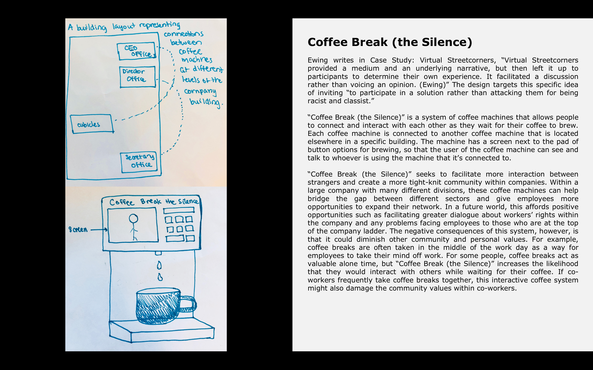
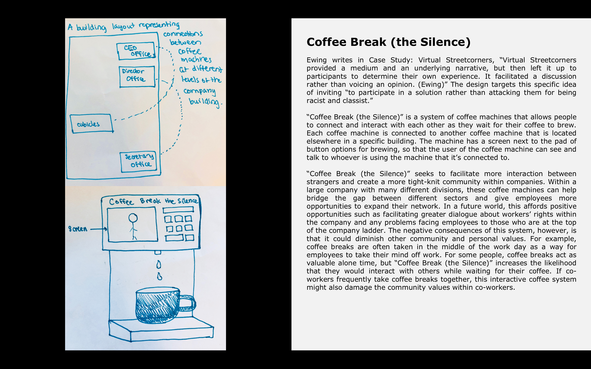
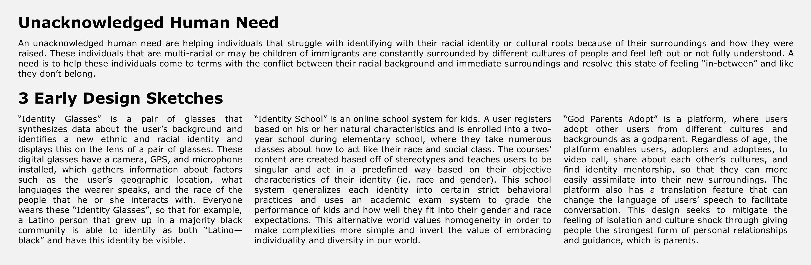
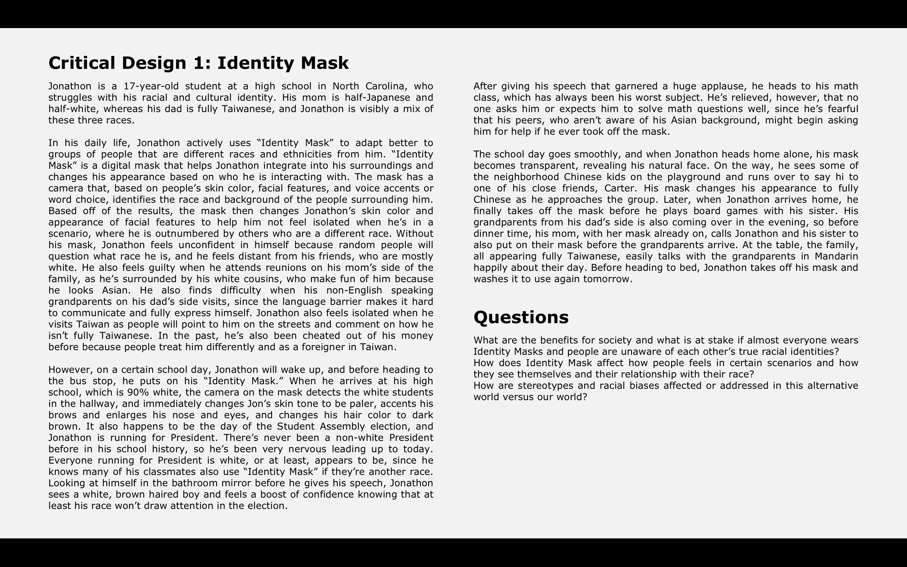
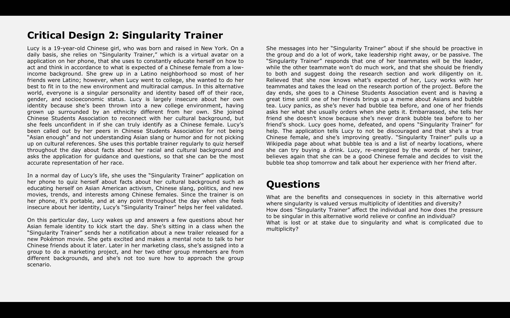

Design Fiction Workbook
Sketches, Design Thinking
Fall 2018
In my INFO 4240 class: Designing Technologies for Social Impact, I created several projects utilizing speculative design, critical design, and participatory design principles. Below, I have compiled a few of these sketches and projects to reflect my work.
Speculative Designs
For these bi-weekly speculative design assignments, we sketched an original design and connected it to a reading.

 

Critical Design
I identified an unacknowledged human need, iterated on my early designs, and produced 2 critical designs about the complexity and issues around ethnic/cultural identity.


